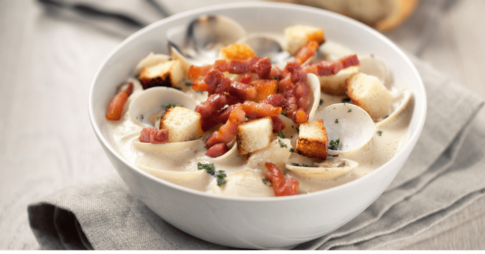

Odin Recipes
Index
Banana Bread
Spicy Tofu
Vegtable Lazagne
Clam Chowder
Clam Chowder

Ingredients
- 4 6.5 ounce cans chopped clams
- 1 cup low-sodium chicken broth
- 1 1/2 pounds russet potatoes , peeled and diced (about 3 medium potatoes)
- 3 Bay Leaves
- 4 Tablespoons butter
- 1 medium yellow onion
- 2 cloves garlic , finely minced
- 1 cup milk
- 1 cup half and half
Steps
- Drain the clams, adding the juice from the cans to a large stock pot. Set the clams aside
- Add chicken broth and diced potatoes to the pot (the liquid should just barely cover the potatoes). Bring to a simmer, add the bay leaf, and cook until the potatoes are barely fork tender, about 5-6 minutes.
- While the potatoes cook, in a second pot, heat the butter and olive oil over medium heat until the butter is melted. Add the onions, celery, bell peppers and garlic and cook until tender, about 4-5 minutes
- Stir in the flour and cook for 30 seconds. Gradually stir in the milk and half and half, whisking as you add them to break up any clumps of flour. Bring mixture to a simmer and cook until the thickened, about 5 minute
- Stir the creamy mixture into the potatoes. Stir in the salt, pepper, vinegar, and reserved clams. Cook for 5 more minutes.